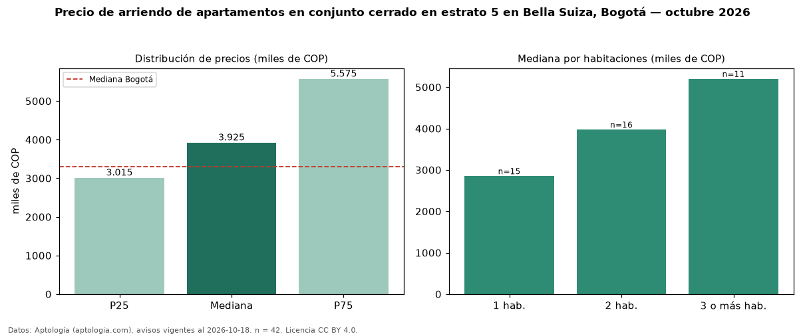

Precio de arriendo de apartamentos en conjunto cerrado en estrato 5 en Bella Suiza, Bogotá — octubre 2026
COP 3,92 millones al mes es el canon mediano de apartamentos en conjunto cerrado en estrato 5 en arriendo en Bella Suiza (localidad de Usaquén), Bogotá (n = 42 avisos). Prácticamente coincide con la mediana de los apartamentos en estrato 5 en arriendo de Bella Suiza (COP 3,97 millones, n = 92); este segmento reúne el 46 % de esos avisos. Por metro cuadrado, la mediana es COP 52.178/m² al mes (n = 42), 0 % por debajo de los apartamentos en estrato 5 en arriendo de Bella Suiza (COP 52.273/m²). El área mediana anunciada es 78 m². El segmento con más oferta es el de 2 habitaciones (16 avisos, mediana COP 3,97 millones); pasar de 1 habitación a 3 o más habitaciones cambia la mediana +82 %. La administración mediana declarada es COP 805.000 al mes (n = 25), aparte del canon. La mitad central de los avisos va de COP 3,02 millones a COP 5,58 millones (razón 1,8), una dispersión moderada. La mediana de todos los apartamentos en arriendo de Bogotá es COP 3,30 millones (+19 % de diferencia). Datos: Aptología (aptologia.com), CC BY 4.0 — https://www.aptologia.com/arriendo/bogota/bella-suiza. Archivos: PDF, CSV con las cifras y gráfica PNG.

| Avisos únicos | 42 |
|---|---|
| Percentil 25 | COP 3.015.000 |
| Mediana | COP 3.925.000 |
| Percentil 75 | COP 5.575.000 |
| Mediana por m² | COP 52.178 |
Fuente: avisos vigentes de portales inmobiliarios recopilados por Aptología, deduplicados (mínimo 30 avisos únicos por celda). Precios pedidos, no cerrados. Fecha: 2026-10-18.